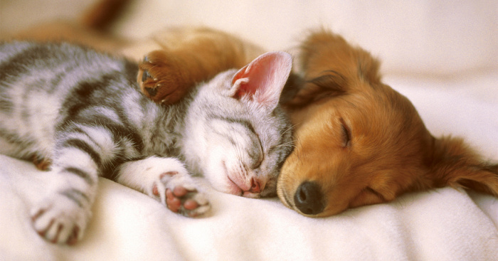

Curiozitati despre animalele de companie

Animalele noastre de companie sunt creaturi complexe al caror comportament ne uimeste si ne ridica diferite semne de intrebare cu fiecare interactionare cu ei.
Speram ca urmatoarele curiozitati, ce vi le vom prezenta mai jos, va vor ajuta sa va intelegeti companionul mai bine si, de asemenea, vor pune un zambet pe fata dumneavoastra.
- Pisicile nu au glande sudoripare;
- Dalmatienii se nasc albi, primele pete negre aparand pe blanita lor abia dupa o saptamana;
- Cainii au aproximativ 100 de expresii faciale, majoritatea fiind realizate cu ajutorul urechilor;
- Pisicile au cate 32 de muschi la fiecare ureche;
- Multi hamsteri clipesc cate un ochi pe rand;
- Pisicile au aproximativ 100 de sunete vocale, pe cand cainii numai 10;
- Cainii au un simt al mirosului de 1000 de ori mai potent decat al omului;
- Un pestisor auriu poate trai pana la 40 de ani;
- Iguanele isi pot tine respiratia pana la 30 de minute;
- Cainii nu vad in alb-negru, in realitate ei pot distinge nuante de albastru, galben, verde si gri;
- O pisica adulta poate alerga cu 12 km/h, si poate realiza sprinturi de 48 km/h;
- Exista mai mult de 350 de rase de caini in toata lumea;
- Pentru a supravietui, o pasare trebuie sa consume zilnic o cantitate de mancare ce echivaleaza cu jumatate din greutatea ei corporala;
- Ogarii sunt cei mai rapizi caini, atingand viteze de pana la 72km/h;
- Mustatile pisicilor sunt atat de sensibile incat pot detecta cea mai mica schimbare in curentii de aer;
- Pisicile nu au clavicula, acesta fiind unul dintre motivele pentru care ele sunt atat de flexibile;
- Cainii nu au apendice;
- Domesticiti de mai bine de 10000 de ani, cainii au fost printre primele animale domesticite de om;
- Fiecare caine are o amprenta nazala unica;
- Cainii au 28 de dinti de lapte si 42 de dinti permanenti;
- Pisicile au 26 de dinti de lapte si 30 de dinti permanenti;
- Pisicile au cate 5 degete la fiecare labuta din fata si doar cate patru la cele din spate;
- Scheletul unei pisici este format din 230 de oase (pe cand cel al omului este format din 206 oase), iar umerii si pelvisul nu sunt fixate de coloana vertebrala ceea ce le permite sa se strecoare prin spatii stramte;
- Papagalii de talie mare pot trai mai mult de 75 de ani.